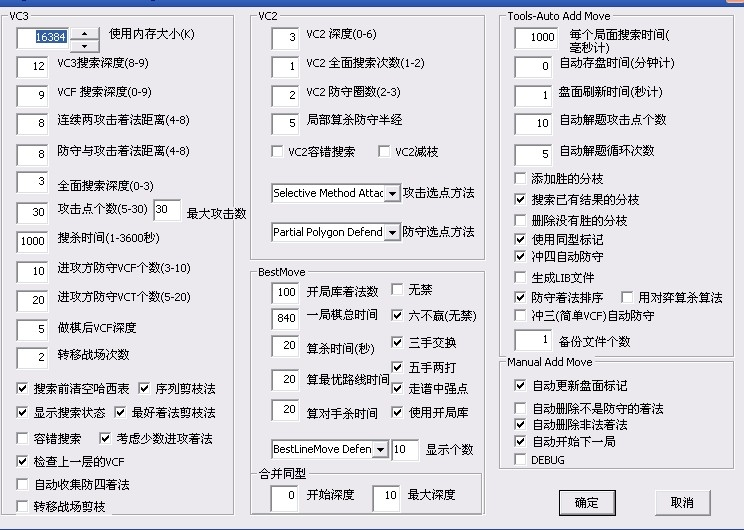

vct习题黑先如何胜？（不要做棋猥琐杀）
#1 vct习题黑先如何胜？（不要做棋猥琐杀） 作者：空恨社小仙 发表时间：2012-1-26 2:46:40
［ 失落刀 于 2012-1-26 14:21:29 时奖励此帖[金币加 100 威望加1］
［ 与郎共五 于 2012-1-26 16:21:08 时花20金币送鲜花一朵］
［ 快乐天羽 于 2012-2-29 0:56:09 时奖励此帖[金币加 100 威望加1］
#2 Re:vct习题黑先如何胜？（不要做棋猥琐杀） 作者：賢周 发表时间：2012-1-26 5:54:25
#3 Re:Re:vct习题黑先如何胜？（不要做棋猥琐杀） 作者：空恨社小仙 发表时间：2012-1-26 7:27:51
 23手你自己认为是vct吗？？
23手你自己认为是vct吗？？
#4 Re:vct习题黑先如何胜？（不要做棋猥琐杀） 作者：自来水 发表时间：2012-1-26 8:41:12
找到猥琐杀了
［此帖子已被 自来水 在 2012-1-26 8:48:55 编辑过］
#5 Re:vct习题黑先如何胜？（不要做棋猥琐杀） 作者：与郎共五 发表时间：2012-1-26 9:07:00
#6 Re:vct习题黑先如何胜？（不要做棋猥琐杀） 作者：与郎共五 发表时间：2012-1-26 17:01:23
#7 Re:vct习题黑先如何胜？（不要做棋猥琐杀） 作者：自来水 发表时间：2012-1-26 19:39:08
关于5L
？？
#8 Re:Re:vct习题黑先如何胜？（不要做棋猥琐杀） 作者：空恨社小仙 发表时间：2012-1-26 21:07:04
都没做对哈
#9 Re:vct习题黑先如何胜？（不要做棋猥琐杀） 作者：逆刃 发表时间：2012-1-26 21:40:53
关于7L。
［ 空恨社小仙 于 2012-1-27 0:22:34 时花20金币送鲜花一朵］
#10 Re:vct习题黑先如何胜？（不要做棋猥琐杀） 作者：逆刃 发表时间：2012-1-26 21:44:43
自己电脑不在，刚刚弄了个破解版，不知道有没有bug。大概看了下，5L的23应该是VCT的首选。
这个问题好像并不复杂。我就贴几个图。
#11 Re:vct习题黑先如何胜？（不要做棋猥琐杀） 作者：逆刃 发表时间：2012-1-26 21:46:52
刚刚LS我打第一句话的时候还没有完成地毯，扫了一下，发现比较简单，就才有了下文。#12 Re:Re:vct习题黑先如何胜？（不要做棋猥琐杀） 作者：逆刃 发表时间：2012-1-26 21:49:38
目前拆棋比较少了，希望能帮助更多的人进步，我就贴一个我自己的08终结者破解版的设置图，没有正版在的时候可以用到。注意只适合08。不好不要喷我。大家可以试试看速度如何，目前发现bug很少，极少时候在VCF数量超过10手以上的时候会忽略。
#13 Re:Re:vct习题黑先如何胜？（不要做棋猥琐杀） 作者：空恨社小仙 发表时间：2012-1-27 0:22:01
大师就是大师，果然不同凡响。。。其实整个变化就一路强，而且是28手先冲四才强，不然29直接盖上本身就是一个简单vct，关键32手之后的变化得发个图大家看一下才行啦
#14 Re:vct习题黑先如何胜？（不要做棋猥琐杀） 作者：与郎共五 发表时间：2012-1-27 8:32:06
#15 Re:vct习题黑先如何胜？（不要做棋猥琐杀） 作者：自来水 发表时间：2012-1-27 8:46:14
 12L你这样子当然不复杂
12L你这样子当然不复杂［此帖子已被 自来水 在 2012-1-27 9:25:49 编辑过］
#16 Re:vct习题黑先如何胜？（不要做棋猥琐杀） 作者：自来水 发表时间：2012-1-27 8:52:25
［ 逆刃 于 2012-1-27 10:44:35 时花20金币送鲜花一朵］
#17 Re:vct习题黑先如何胜？（不要做棋猥琐杀） 作者：天真無邪 发表时间：2012-1-27 9:06:31
怎么都好像弄到很複雜似的 这样好像应该沒防了吧
［ 与郎共五 于 2012-1-27 9:34:28 时花20金币送鲜花一朵］
［ 逆刃 于 2012-1-27 10:48:21 时花20金币送鲜花一朵］
［ 自来水 于 2012-1-27 11:08:46 时花20金币送鲜花一朵］
［ 空恨社小仙 于 2012-1-27 22:36:32 时花20金币送鲜花一朵］
#18 Re:vct习题黑先如何胜？（不要做棋猥琐杀） 作者：自来水 发表时间：2012-1-27 9:21:46

［此帖子已被 自来水 在 2012-1-27 9:22:39 编辑过］
#19 Re:vct习题黑先如何胜？（不要做棋猥琐杀） 作者：逆刃 发表时间：2012-1-27 10:42:54
31手是秒杀出来的，我也不知道32是最强，呵呵。
#20 Re:vct习题黑先如何胜？（不要做棋猥琐杀） 作者：逆刃 发表时间：2012-1-27 10:44:53
16L的杀法也是一样的。［ 空恨社小仙 于 2012-1-27 22:22:56 时花20金币送鲜花一朵］
#21 Re:vct习题黑先如何胜？（不要做棋猥琐杀） 作者：逆刃 发表时间：2012-1-27 10:48:41
17的杀法是比较直接的，呵呵。#22 Re:Re:vct习题黑先如何胜？（不要做棋猥琐杀） 作者：空恨社小仙 发表时间：2012-1-27 22:34:00
大师就是大师，佩服佩服！ 但你其中一个杀我看不太明白，请问接下来如何才能vct杀呢？
但你其中一个杀我看不太明白，请问接下来如何才能vct杀呢？#23 Re:vct习题黑先如何胜？（不要做棋猥琐杀） 作者：自来水 发表时间：2012-1-27 23:18:34
LZ真仔细（逆刃一看，终结者有BUG，没关系亲自上！ ）
）［此帖子已被 自来水 在 2012-1-27 23:23:36 编辑过］
#24 Re:vct习题黑先如何胜？（不要做棋猥琐杀） 作者：自来水 发表时间：2012-1-27 23:22:19
33=35应该可以了...#25 Re:Re:vct习题黑先如何胜？（不要做棋猥琐杀） 作者：空恨社小仙 发表时间：2012-1-27 23:23:21
#26 Re:vct习题黑先如何胜？（不要做棋猥琐杀） 作者：逆刃 发表时间：2012-1-27 23:45:46
呵呵，不是不好意思回答，确实是bug，因为是在家才调试的参数，版本是朋友给我的，虽然都是08，但是和我以往用的版本不是同一个，破解方法也是不一样，所以设置上面肯定需要有些改变的。我在10L第一次回帖的时候就已经说了，在使用过程中也明显感觉到了不对，计算也非常慢。实在抱歉。［ 空恨社小仙 于 2012-1-28 7:22:57 时花20金币送鲜花一朵］
#27 Re:Re:vct习题黑先如何胜？（不要做棋猥琐杀） 作者：空恨社小仙 发表时间：2012-1-28 7:49:16
人非圣贤，逆刃兄大师风范也，小仙向来是佩服的！ 其实出这个简单的习题本意只是想大家聚聚，热闹热闹，此题杀法并不唯一，有n个杀法，都是vct，只是看看大家的思路，让小仙学习学习罢了，由衷感谢大家的参与，希望以后大家常在这里交流各自的好思路，新思路，再次感谢各位大侠们的赏光···下面是我汇集了各位大侠们的思路再结合一点点自己的思路做的一个关于这个习题几种杀法的小谱，望各位批评指正！·（这里特别推崇天真无邪的回帖，这让我看到了一个纯人脑的正解，非常简单精确！）
其实出这个简单的习题本意只是想大家聚聚，热闹热闹，此题杀法并不唯一，有n个杀法，都是vct，只是看看大家的思路，让小仙学习学习罢了，由衷感谢大家的参与，希望以后大家常在这里交流各自的好思路，新思路，再次感谢各位大侠们的赏光···下面是我汇集了各位大侠们的思路再结合一点点自己的思路做的一个关于这个习题几种杀法的小谱，望各位批评指正！·（这里特别推崇天真无邪的回帖，这让我看到了一个纯人脑的正解，非常简单精确！）
 小习题简谱.rar
小习题简谱.rar
［ 失落刀 于 2012-1-28 12:19:51 时奖励此帖[金币加 100 威望加1］